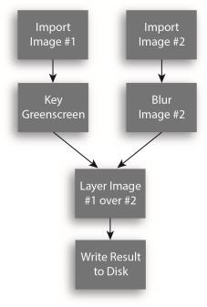
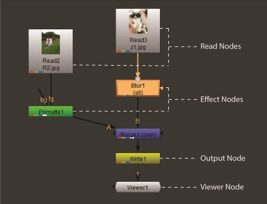

一个 核武器 项目是在网络与运营商的要求 节点 . 核武器 的 合成环境 利用基于节点的工作流，您可以在其中连接一系列节点来读取、处理和操作图像。脚本中的每个节点 (comp) 执行一个操作并对输出做出贡献。

你可以打开一个 核武器 在文本编辑器中显示 comp 文件，并显示一系列顺序命令，在呈现输出时解释和执行这些命令。
|  |
在上面的图片中，你看到一个非常简单的例子 核武器 脚本。二 阅读 节点引用磁盘上的媒体。效果节点提取遮罩并模糊图像。一个 合并 节点设置为 over，合成前景图像 (输入 一个 ) 在背景图像上 (输入 B )。最后, 写 节点将完成的复合呈现并输出到磁盘。还有一个 观众 节点，显示脚本中任何节点的输出。
注意: Nuke Assist 不支持写节点或渲染农场。请参阅 Nuke 产品 欲了解更多信息。
|
|